Identidade Visual · Lab Escola 3D
Guia oficial de uso da marca, especificações técnicas de logo, ícone, cores, tipografia, padrões visuais e arquivos vetoriais em SVG para download.
Quem somos
O Lab Escola 3D é um laboratório interdisciplinar, colaborativo e experimental, como foco em processos de inovação na educação pública do Rio de Janeiro.
Nosso objetivo é apoiar o desenvolvimento de produtos e serviços educacionais, contribuindo para a formação continuada de professores e estudantes da rede pública.
Baseados no movimento maker e nas metodologias ativas, buscamos cooperar para formação de cidadãos independentes e inovadores capazes de utilizar o conhecimento adquirido para transformar o meio em que vivem.
A Marca · Logo e Ícone
Logo
O logo do Lab Escola 3D busca transmitir força pelo seu nome e leveza pelo seu ícone. Para isso, a tipografia escolhida foi uma sem serifa de espessura alta e linhas limpas, que tem como característica uma robustez natural e ares de modernidade e inovação.
O ícone do Lab Escola 3D é a junção da letra “L” com o número três, sendo uma alusão direta ao nome do projeto. Sua forma ser percebida apenas pelos seus contornos oferece um teor de simplicidade e se soma com o ar vanguardista da tipografia.
Dessa forma, o logo condensa os valores de educação, inovação e modernidade do laboratório. Conta também com versões horizontais e verticais, coloridas e monocromáticas.
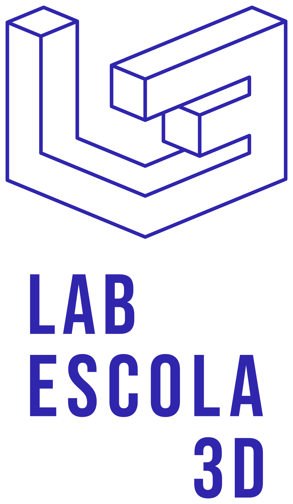
Ícone
A relação entre a letra “L” e o número três é visualizada em uma perspectiva obliqua, oferecendo vista por igual de ambos os lados da peça.
Por ter a força de transmitir por si só os ideais de tecnologia, ensino e inovação do Lab Escola 3D, é permitido a aplicação isolada do ícone.

Área de proteção e Estrutura
Afim de garantir legibilidade ideal do logo em relação a demais elementos em volta, foi estabelecida uma área mínima de respiro a ser respeitada em futuras aplicações. A medida da área de proteção equivale à largura do “3D”.
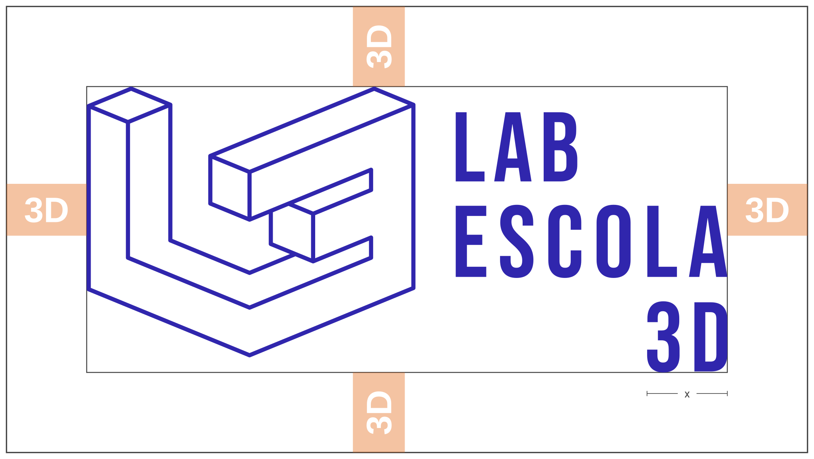
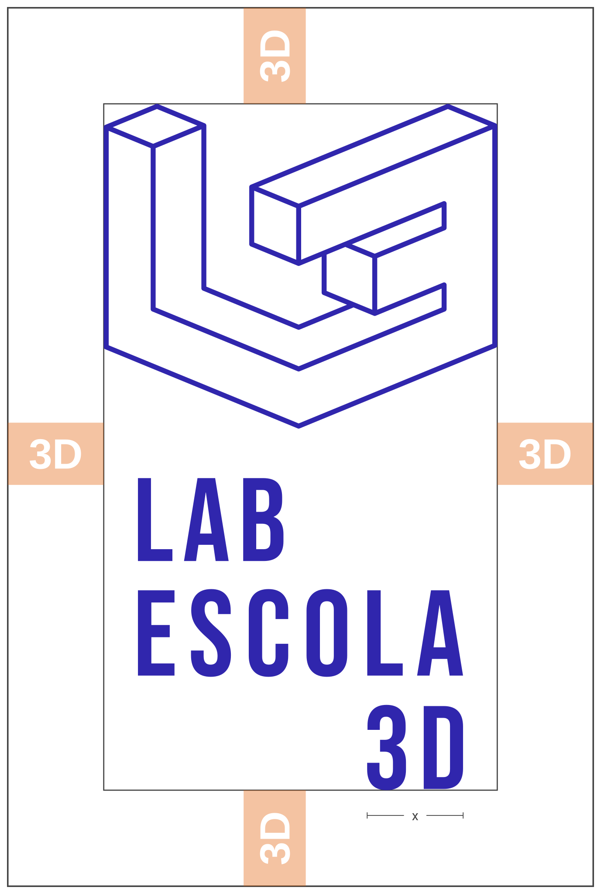
Área de proteção do ícone
Para o uso do ícone desvinculado do logo, recomenda-se casos à vontade do aplicador, exceto quando o ícone for usado como a única forma de apresentação visual do Lab Escola 3D, requerendo o uso completo do logo posteriormente em outra configuração.
A medida da área de proteção segue a mesma, equivalendo à largura do “3D”.

Estrutura do ícone
Sob a perspectiva oblíqua, o ícone foi traçado com linhas diagonais em uma angulação de 24,1 graus, se mantendo simétricas nos lados opostos da figura.
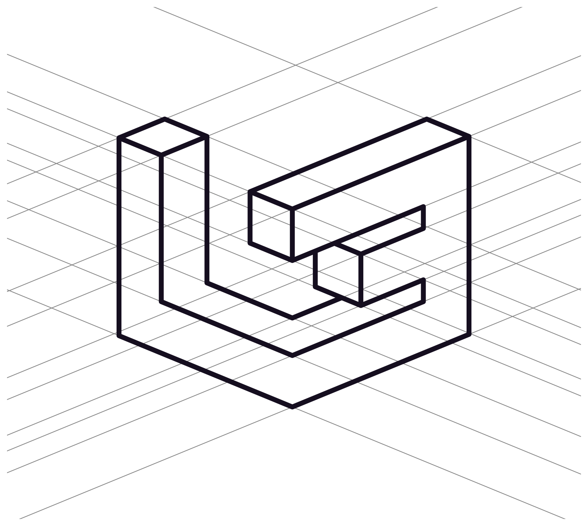
Versões oficiais e Redução mínima
Logo vertical
Logo horizontal
Ícone isolado
Redução do logo vertical
Para manter a legibilidade do logo em ambientes digitais, o logo não pode ser apresentado menor que 101 x 176 px. Em impressos, mantenha a altura do logo acima de 3 cm.
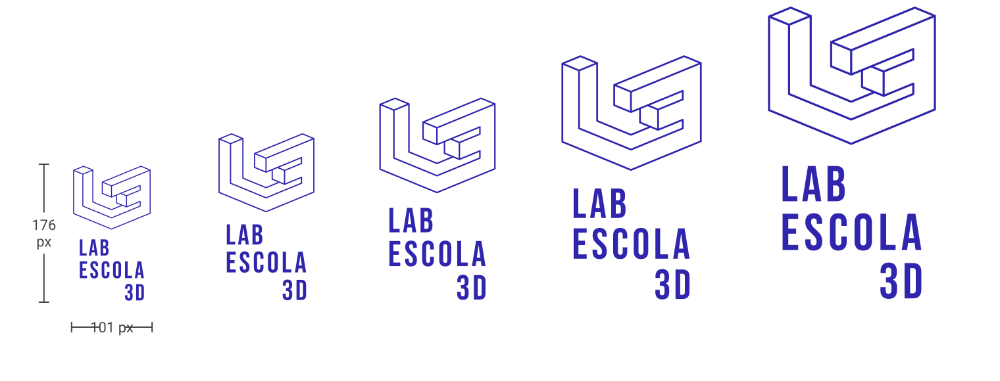
Redução do logo horizontal
Para manter a legibilidade do logo em ambientes digitais, o logo não pode ser apresentado menor que 200 x 89 px. Em impressos, mantenha a largura do logo acima de 4 cm.
Suportes coloridos, Imagens coloridas e Usos indevidos
Logo em suportes coloridos
Em fundos com cores chapadas, recomenda-se o uso da paleta de cores do Lab Escola 3D. Não use o logo sobre gradientes nem em fundos com a mesma cor do logo.
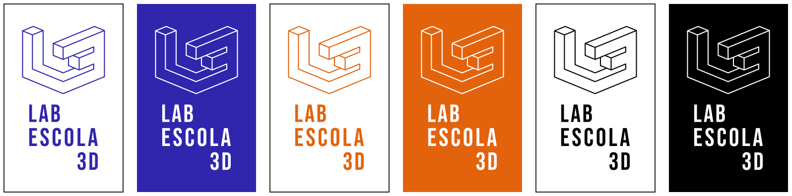
Logo em imagens coloridas
Atenção ao usar o logo em imagens. Não o posicione em cantos onde as cores se pareçam muito com a cor da logo ou demais situações que comprometam sua legibilidade. Tente escolher um espaço o mais limpo possível.

Usos indevidos do logo
Pedimos para não alterar o logo a fim de manter sua aparência geral intacta. Abaixo, alguns exemplos.


Identidade · Tipografia e Cores
Tipografia
A fonte primária do Lab Escola 3D é a Bebas Neue, sem serifa notória por sua imponência expressa pela sua verticalidade e espessura acentuada. Recomenda-se uso em títulos grandes e informações de destaque. Pode ser usada como uma fonte display.
A fonte secundária é a Roboto, com seu estilo leve, moderno e versátil sendo uma excelente união com a fonte primária. Recomenda-se uso dos pesos bold ou semibold em títulos menores, com os pesos regular ou light em textos corridos.
Cores
O Lab Escola 3D expressa sua linguagem por meio de sua paleta de cores composta pela sobriedade do roxo e energia do laranja, indo de encontro com a proposta de inovação educacional e cultura maker que o laboratório foca em desenvolver. De suporte, temos o preto e branco. A paleta dispensa qualquer tipo de gradientes.
Nota: para evitar o preto de sair com aspecto lavado em impressos, use a mistura CMYK especificada.
| Cor | HEX | RGB | CMYK | Papel |
|---|---|---|---|---|
| Roxo | #3026AD | R 48 · G 38 · B 173 | C 92 · M 91 · Y 00 · K 00 | Principal |
| Laranja | #E3630D | R 227 · G 99 · B 13 | C 06 · M 75 · Y 100 · K 00 | Destaque |
| Preto (impresso) | #000000 | R 0 · G 0 · B 0 | C 75 · M 68 · Y 67 · K 90 | Suporte (preto composto) |
| Branco | #FFFFFF | R 255 · G 255 · B 255 | C 00 · M 00 · Y 00 · K 00 | Suporte |

Padrões visuais
O ícone do Lab Escola 3D é ideal para qualquer tipo de padronagem, incrementos ou repetições visuais. Contanto que a aplicação do ícone se mantenha alinhada com os guias de uso no manual, outros tipos de padrões e estampas são permitidas. Nota: apenas em aplicações de padronagens e afins, a rotação do ícone é permitida.


Aplicações e Persona
O logo do Lab Escola 3D é ideal em uma infinidade de suportes e formatos diferentes, adequados para diversas situações, como pôsteres, papelaria institucional, camisas, mochilas, bolsas, entre muitas outras.


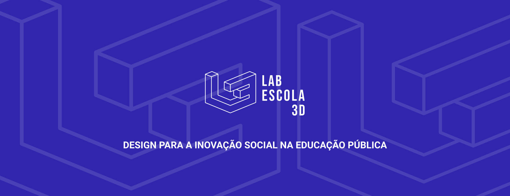
Persona — Profª. Márcia

Elementos candidatos e kit do professor
Candidatos complementares, não oficiais. A definição do que entra na próxima revisão da identidade visual é da equipe de design. Os SVGs são gerados por código (geradores); não edite à mão.
Prancha da proposta (lote 1) · Prancha do lote 2 e do kit do professor
Marca reduzida: cubo e selo 2 arquivos

Elementos do site (2024) 10 arquivos

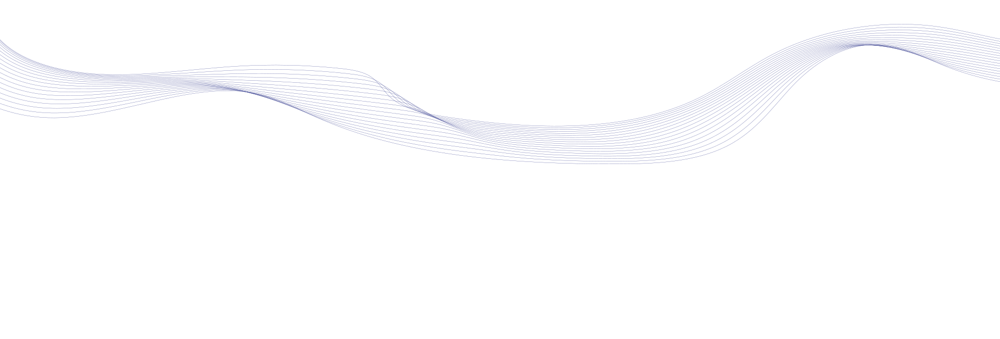
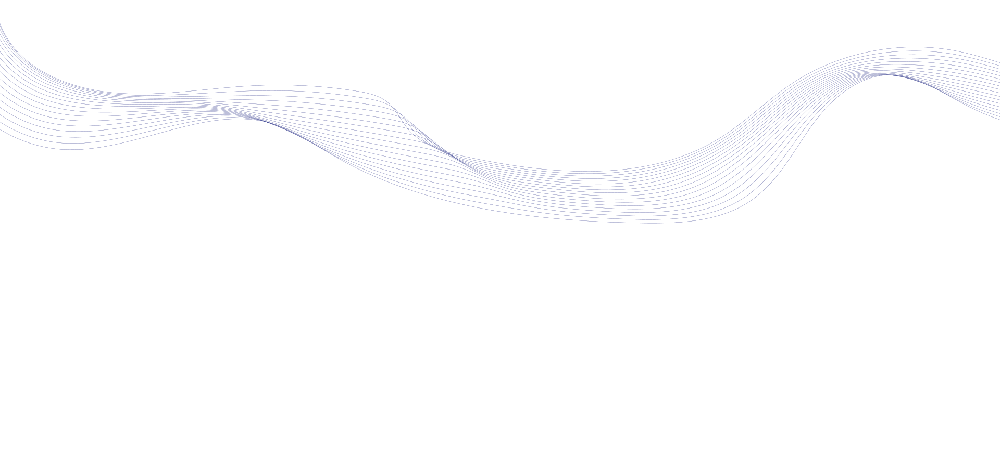


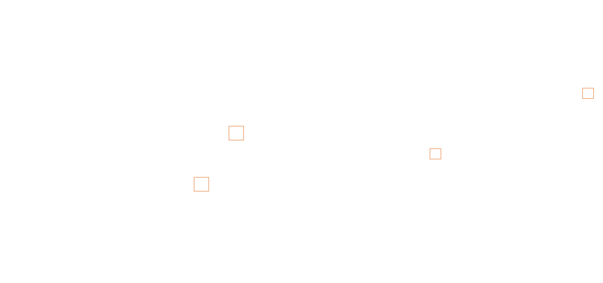
Elementos garimpados no Canva (2026) 29 arquivos
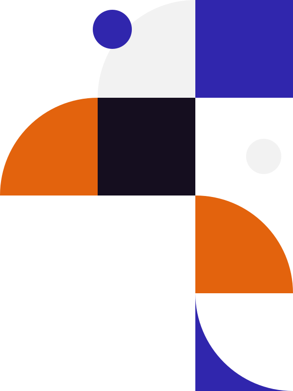




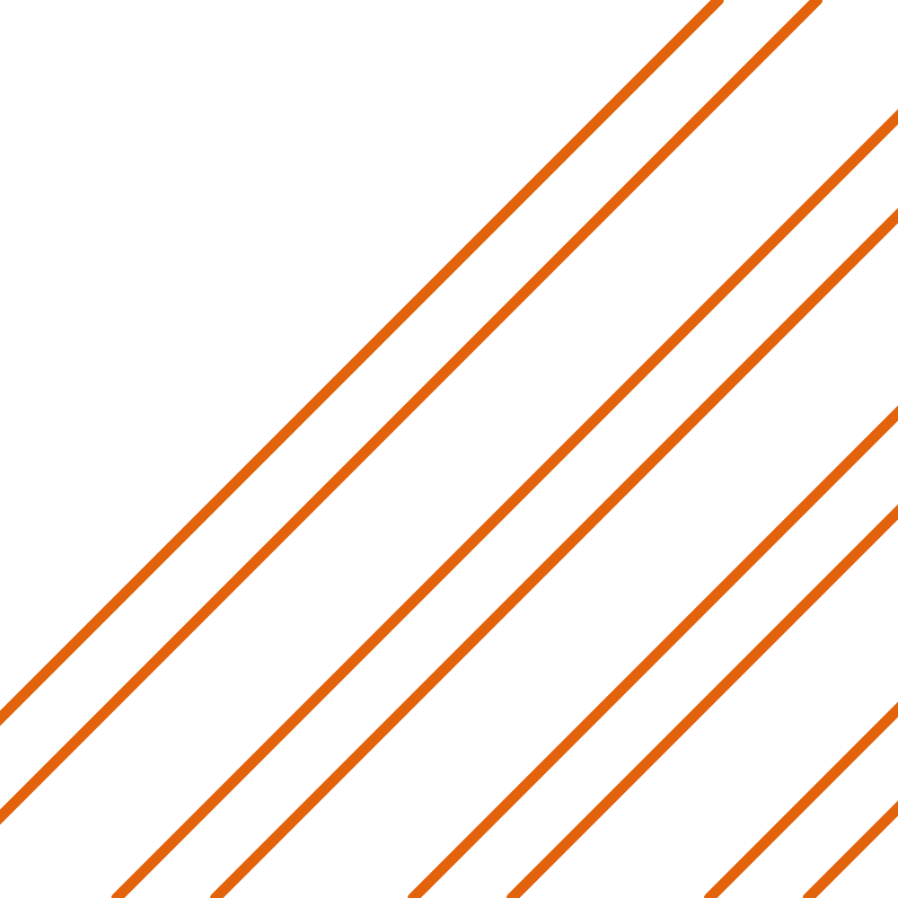
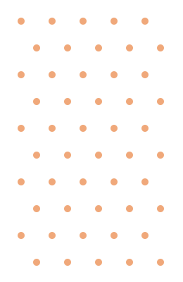


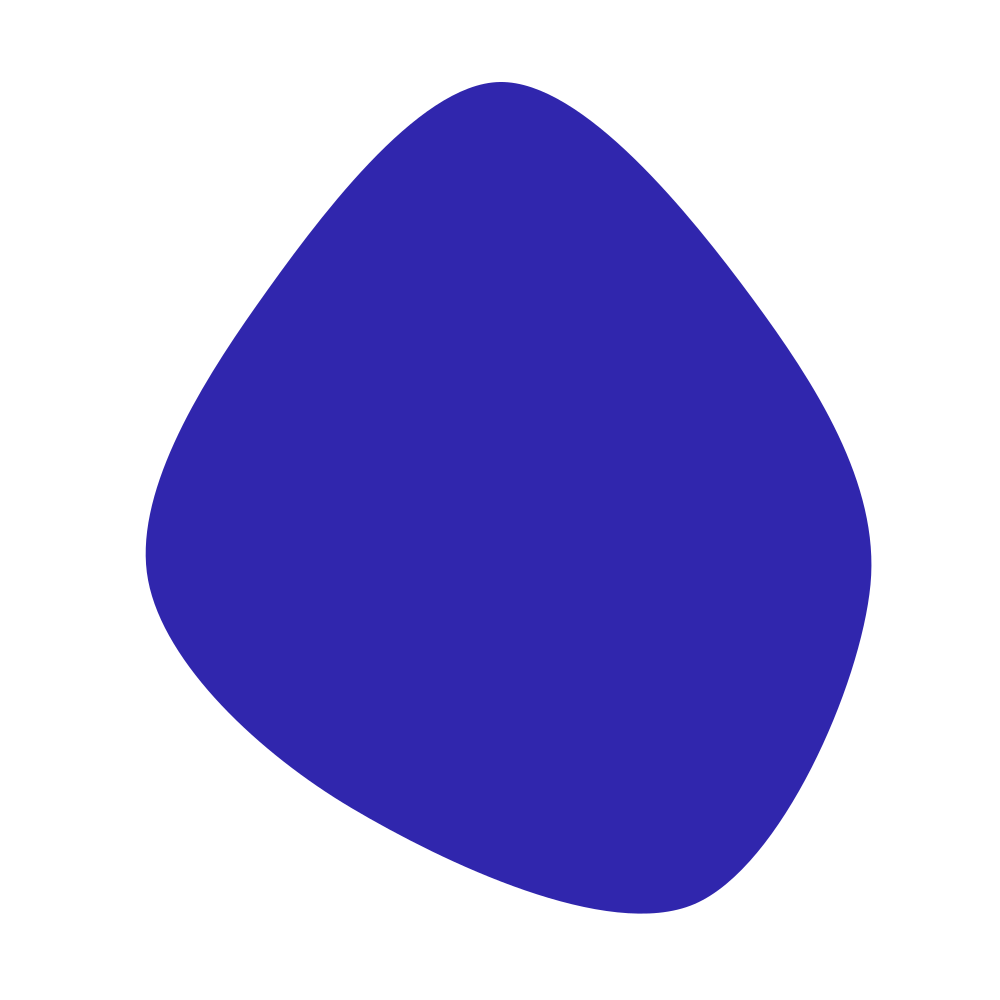
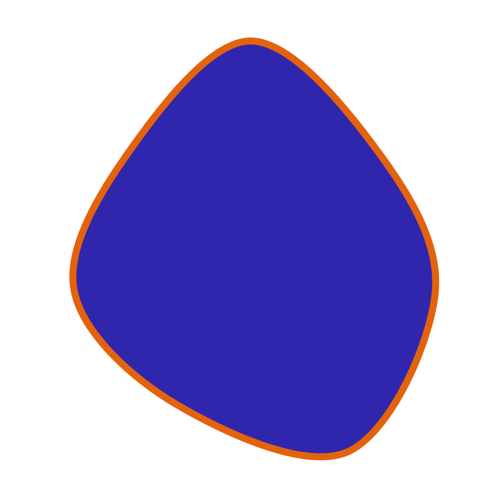


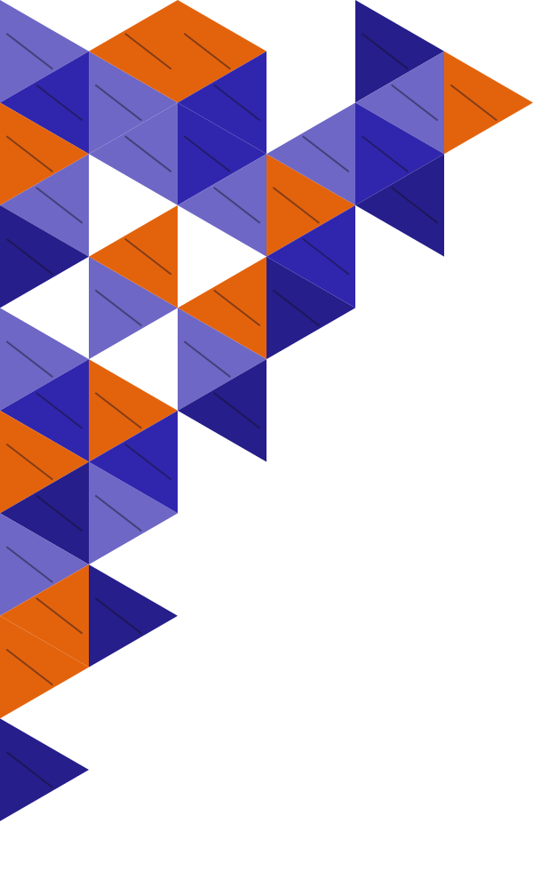


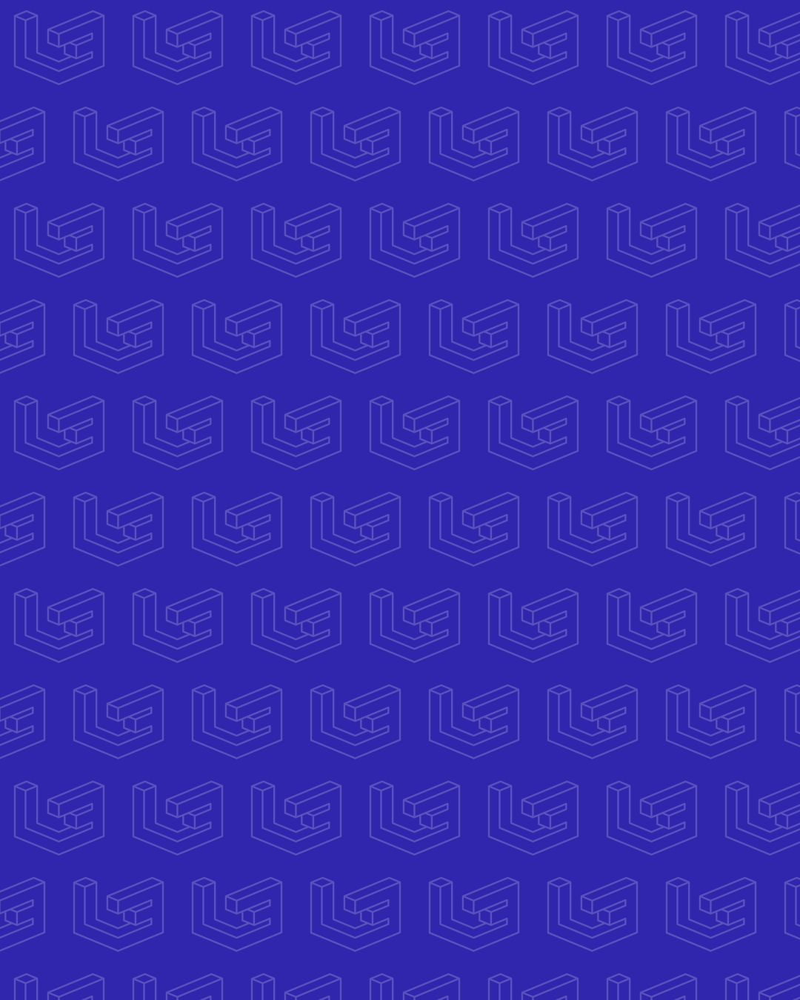

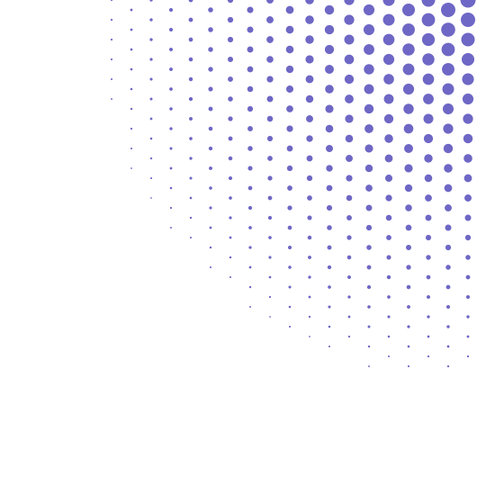
Kit do professor — gabaritos A4 14 arquivos


Contato
Se houveram dúvidas, sugestões ou comentários sobre o manual ou o Lab Escola 3D, entre em contato com a gente.